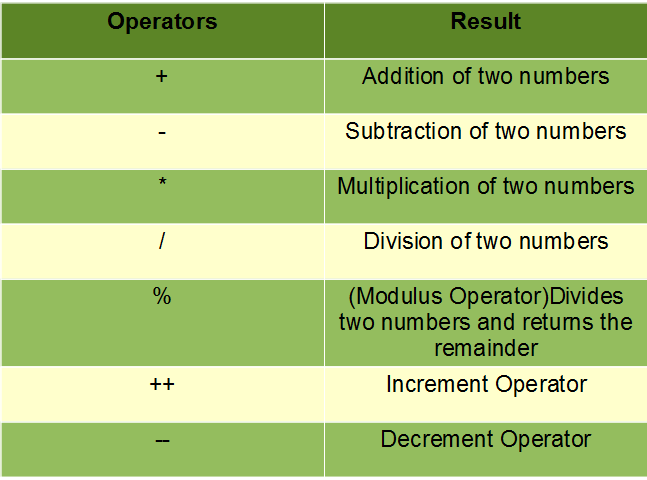
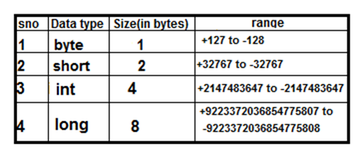
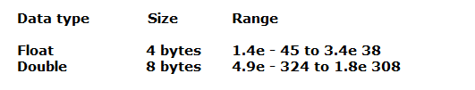
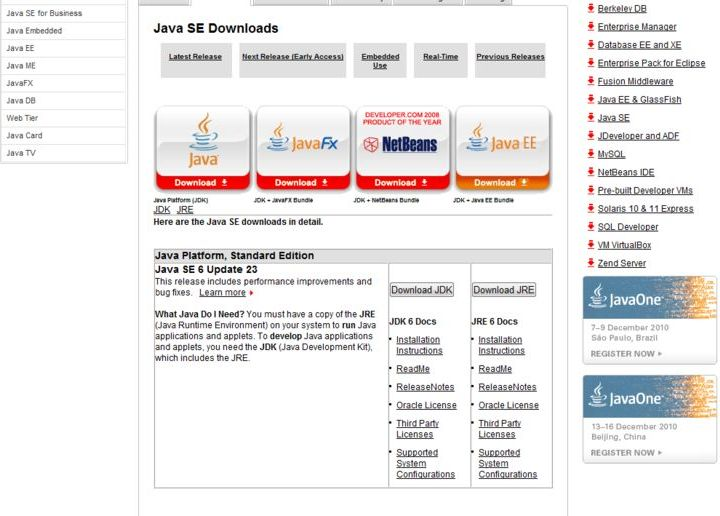
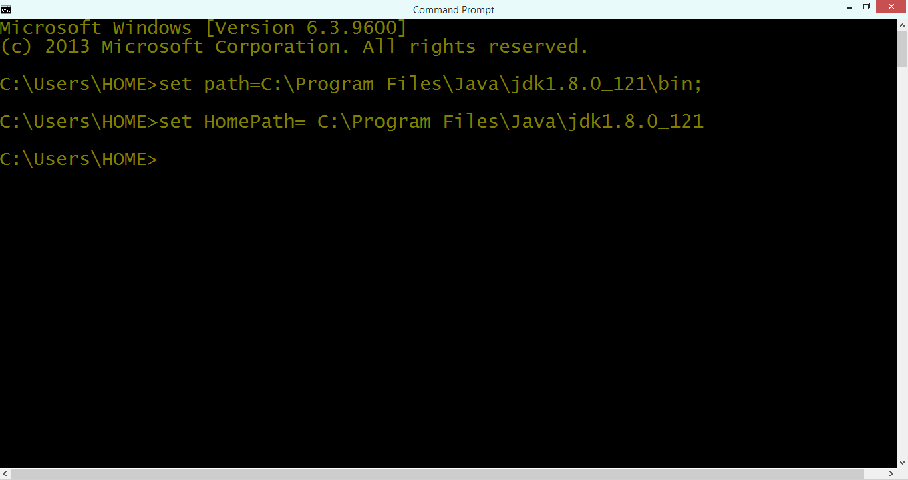
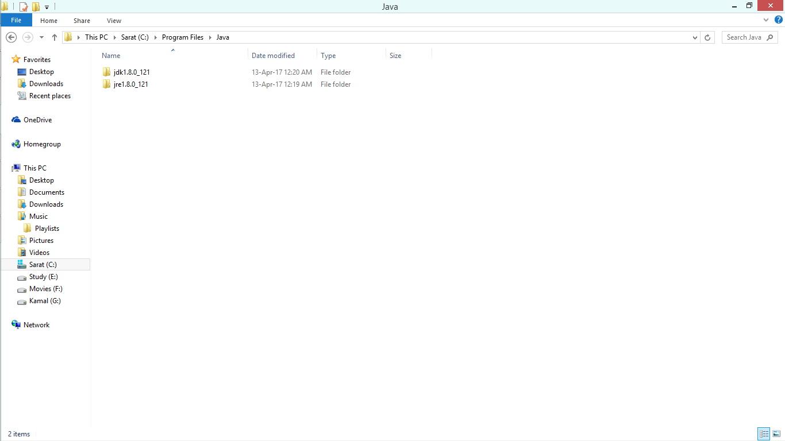
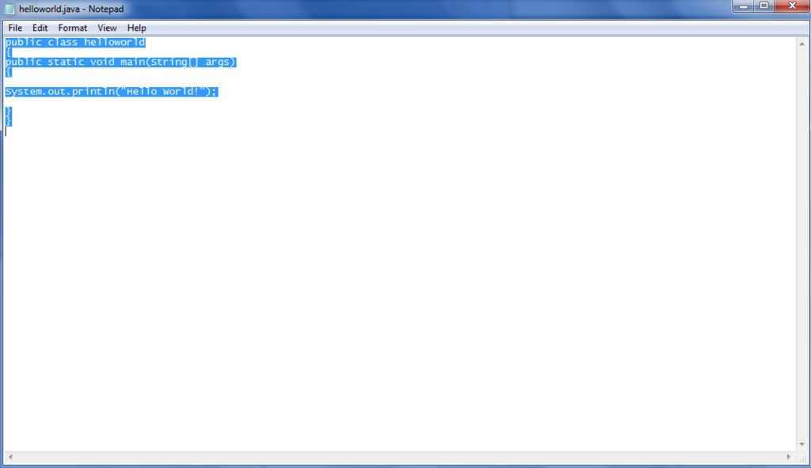
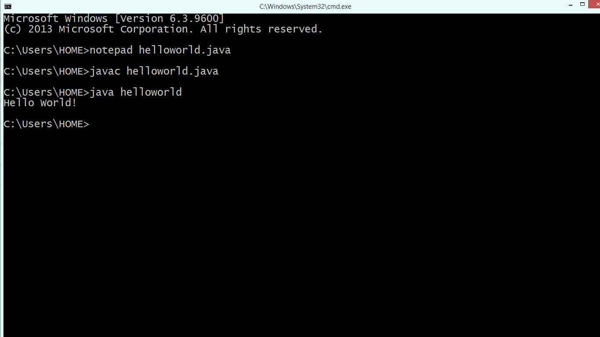

Introduction
1. What is a Class and an Object
2. Java Comments
3. Operators
4. DataTypes in Java
5. Arrays
6. Run a java program from command prompt
7. Type Conversion, Type Casting
1) What is a Class and an Object
Class:In Java, everything is encapsulated under classes.The Class is the core of Java language.The Class can be defined as a template/ blueprint that describes the behaviors /states of a particular entity. A class defines the new data type. Once defined this new type can be used to create an object of that type.The Object is an instance of the class. You may also call it as physical existence of a logical template class. A class is declared using class keyword. A class contains both data and code that operate on that data. The data or variables defined within a class are called instance variables and the code that operates on this data is known as methods.
Rules for Java Class
- A class can have only public or default(no modifier) access, specifier.
- It can be either abstract, final or concrete (normal class).
- It must have the class keyword, and class must be followed by a legal identifier.
- It may optionally extend one parent class. By default, it will extend java.lang.Object.
- It may optionally implement any number of comma-separated interfaces.
- The class's variables and methods are declared within a set of curly braces {}.
- Each .java source file may contain only one public class. A source file may contain any number of default visible classes.
- Finally, the source file name must match the public class name and it must have a .java suffix.
Syntax for Declaring Class:
< Access Modifier > class < Class_Name> extends < Super_Class_Name> implements < Interface_Name>
Access Modifier: Defines who in the Java world can access this class and members of the class.
CLASS_NAME: Unique name for the class in a specific package.
SUPER_CLASS_NAME: Name of the class which given class extends.( extends keyword is used for this purpose)
INTERFACE_NAME: Name of an Interface which above class implements.( implements keyword is used for this purpose)
Eg:
class Student.
{
String name;
int rollno;
int age;
}
Object:
There is often confusion on the difference between Class and Objects.The Class is the creation of a prototype and Object is the actual implementation of that prototype. Technically, Class is a template which describes what state and behavior of an instance this class can have. Object implements the state and behavior in the form of variables and methods and requires some memory allocated.
To create an Object of a Class
Syntax:
< Class_Name > ClassObjectReference = new < Class_Name >();
Here the constructor of the Class(Class_Name) will be executed and an Object will be created(ClassObjectReference will hold the reference to the created Object in memory).
Example
package com;
public class World
{
int i; // Class Variable(State)
void method() {
System.out.println("Inside Method");
}// Method (Behavior)
}
Object Create
World obj = new World();
2) Java Comments
The java comments are statements that are not executed by the compiler and interpreter. The comments can be used to provide information or explanation about the variable, method, class or any statement. It can also be used to hide program code for specific time.
Types of Java Comments
There are 3 types of comments in Java.
1. Single Line Comment
2. Multi-Line Comment
3. Documentation Comment
1) Java Single Line Comment
The single line comment is used to comment only one line.
Syntax:
//This is single line comment
Example:
public class CommentExample1
{
public static void main(String[] args)
{
int i=44;//Here, i is a variable
System.out.println(i);
}
}
Output:44
2) Java Multi Line Comment
The multi-line comment is used to comment multiple lines of code.
Syntax:
/* This is multi line comment */Example:
public class CommentExample2 { public static void main(String[] args) { /* Let's declare and print variable in java. */ int i=44; System.out.println(i); } }
Output: 44
3) Java Documentation Comment
The documentation comment is used to create documentation API. To create documentation API, you need to use Javadoc tool. Syntax:
/** This is documentation comment */
Example:
/** The Calculator class provides methods to get addition and subtraction of given 2 numbers.*/
public class Calculator
{
/** The add() method returns addition of given numbers.*/
public static int add(int a, int b){return a+b;}
/** The sub() method returns subtraction of given numbers.*/
public static int sub(int a, int b){return a-b;}
}
Compile it by javac tool:
javac Calculator.java
Create Documentation API by javadoc tool:
javadoc Calculator.java
3) Basic Operators in Java
Java provides a rich operator environment. We can classify the basic operators in java in following groups:
1. Assignment Operators
2. Arithmetic Operators
3. Relational Operators
4. Logical Operators
5. Bit wise Operator
6. Compound Assignment Operators
Let us now learn about each of these operators in details.
Arithmetic Operators: Arithmetic operators are used to perform arithmetic/mathematical operations on operands.
Addition (+) : Adds two operands
Subtraction (-): Subtracts two operands
Multiplication (*): Multiplies two operands
Division (/): Divides the first operand by the second.
Modulus (%): Returns the remainder when the first operand is divided by the second
Increment (++): Increment the value of an integer. When placed before the variable name (also called pre-increment operator), its value is incremented instantly. For example, ++x.And when it is placed after the variable name (also called post-increment operator), its value is preserved temporarily until the execution of this statement and it gets updated before the execution of the next statement. For example, x++.
Decrement (-): Decrement the value of an integer. When placed before the variable name (also called pre-decrement operator), its value is decremented instantly. For example, -x.
And when it is placed after the variable name (also called post-decrement operator), its value is preserved temporarily until the execution of this statement and it gets updated before the execution of the next statement. For example, x-.
Assignment Operators = Arithmetic Operators - + * / % ++ -- Relational Operators > < >= <= == != Logical Operators && || & | ! ^ Bit wise Operator & | ^ >> >>> Compound Assignment Operators += -= *= /= %= <<= >>= >>>= Conditional Operator ? :

ASSIGNMENT OPERATORS
The java assignment operator statement has the following syntax:
variable> = If the value already exists in the variable it is overwritten by the assignment operator (=).
ARITHMETIC OPERATORS
Java provides eight Arithmetic operators. They are for addition, subtraction, multiplication, division, modulo (or remainder), increment (or add 1), decrement (or subtract 1), and negation. An example program is shown below that demonstrates the different arithmetic operators in java.
The binary operator + is overloaded in the sense that the operation performed is determined by the type of the operands. When one of the operands is a String object, the other operand is implicitly converted to its string representation and string concatenation is performed.
RELATIONAL OPERATORS
Relational operators in Java are used to compare 2 or more objects. Java provides six relational operators:
greater than (>), less than (<), greater than or equal (>=), less than or equal (<=), equal (==), and not equal (!=).
All relational operators are binary operators, and their operands are numeric expressions.
Binary numeric promotion is applied to the operands of these operators. The evaluation results in a boolean value. Relational operators have precedence lower than arithmetic operators, but higher than that of the assignment operators. An example program is shown below that demonstrates the different relational operators in java. LOGICAL OPERATORS
Logical operators return a true or false value based on the state of the Variables. There are six logical, or boolean, operators. They are AND, conditional AND, OR, conditional OR, exclusive OR, and NOT. Each argument to a logical operator must be a boolean data type, and the result is always a boolean data type. An example program is shown below that demonstrates the different Logical operators in java.
BITWISE OPERATORS
Java provides Bitwise operators to manipulate the contents of variables at the bit level.
These variables must be of numeric data type ( char, short, int, or long). Java provides seven bitwise
operators. They are AND, OR, Exclusive-OR, Complement, Left-shift, Signed Right-shift, and Unsigned Right-shift. An example program is shown below that demonstrates the different Bitwise operators in java. COMPOUND OPERATORS
compound operators perform shortcuts in common programming operations. Java has eleven compound assignment operators.
Syntax:
= argument2.
The above statement is the same as, argument1 = argument1 operator argument2. An example program is shown below that demonstrates the different Compound operators in java.
CONDITIONAL OPERATORS
The Conditional Operator is the only ternary (operator takes three arguments) operator in Java. The operator evaluates the first argument and, if true, evaluates the second argument. If the first argument evaluates to false, then the third argument is evaluated. The conditional operator is the expression equivalent of the if-else statement. The conditional expression can be nested and the conditional operator associates from right to left: (a?b?c?d:e:f:g) evaluates as (a?(b?(c?d:e):f):g)
An example program is shown below that demonstrates the Ternary operator in java.
Data type specifies the size and type of values that can be stored in an identifier. The Java language is rich in its data types. Different data types allow you to select the type appropriate to the needs of the application.
Data types in Java are classified into two types:
1) Primitive: which include Integer, Character, Boolean, and Floating Point.
2) Non-primitive: which include Classes, Interfaces, and Arrays.
1. Integer java data types
Integer types can hold whole numbers such as 123 and -96. The size of the values that can be stored depends on the integer type that we choose.
 2. Floating Point
Floating point data types are used to represent numbers with a fractional part. Single precision floating point numbers occupy 4 bytes and Double precision floating point numbers occupy 8 bytes. There are two subtypes:

3. Character
It stores character constants in the memory. It assumes a size of 2 bytes, but basically, it can hold only a single character because char stores Unicode character sets. It has a minimum value of 'u0000' (or 0) and a maximum value of 'uffff' (or 65,535, inclusive). 4. Boolean
Boolean data types are used to store values with two states: true or false.
The Concept of Array in Java
An array is a collection of similar data types.An Array is a container object that holds values of the homogeneous type. It is also known as static data structure because the size of an array must be specified at the time of its declaration.
An array can be either primitive or reference type. It gets memory in heap area. Index of an array starts from zero to size-1.
Multidimensional arrays are arrays of arrays.
To declare a multidimensional array variable, specify each additional index using another set of square brackets.
When you allocate memory for a multidimensional array, you need only specify the memory for the first (leftmost) dimension.
You can allocate the remaining dimensions separately.
In Java, array length of each array in a multidimensional array is under your control.
Let's see the simple example to declare, instantiate, initialize and print the 2Dimensional array.
This instructable will teach you how to:
1. Install the Java Development Kit.
2. Set system variables to easily be able to compile and execute java files.
3. Compile and execute a Java file from Command Prompt
 1.Follow this link: http://www.oracle.com/technetwork/java/javase/downloads/index.html
2. Click Download JDK under the download Java Standard Edition panel.
3. Choose your Operating System and agree to the terms of service. **
** This will probably be Windows since your using Command Prompt.
1. Open the Command Prompt .
2. Type "set Path=C:\Program Files\Javajdk1.8.0_121\bin" .*
3. Type " set HomePath= C:\Program Files\Java\ jdk1.8.0_121 *
* If you have a later JDK ( i.e. JDK 1.6.0_22) replace the portion that says jdk1.6.0_21 with it.
** If you don't know which jdk you have to go to start pane( at bottom left corner of your screen)>click run> click browse>Then go to C:\Program Files\Java
*** Do not type quotation marks in steps 1-3 at the command prompt.
Create Program
1. Go to Start pane>All Programs > Accessories> Notepad.exe
2. Copy and paste the following exactly:
3. a.Save the file as helloworld.java
b.Make sure "Save as type" under where you typed the file name as "All Files" (as opposed to the default "Text-File").
c. You want to save your java file where the Command Prompt is set to open at.*
*Such as C:\Users\Home
1.First compile file by going to Command Prompt and typing javac helloworld.java
2.This will create a class file which you can execute by typing java helloworld
3. It should print "Hello World!" to show your done.
Summary: By the end of this tutorial "Java Data Type Casting Type Conversion", you will be comfortable with converting one data type to another either implicitly or explicitly.
Java supports two types of castings – primitive data type casting and reference type casting. Reference type casting is nothing but assigning one Java object to another object. It comes with very strict rules and is explained clearly in Object Casting. Now let us go for data type casting.
Java data type casting comes with 3 flavors.
1. Implicit casting
2. Explicit casting
3. Boolean casting. 1. Implicit casting (widening conversion)
A data type of lower size (occupying less memory) is assigned to a data type of higher size. This is done implicitly by the JVM. The lower size is widened to higher size. This is also named as automatic type conversion.
In the above code 4 bytes integer value is assigned to 8 bytes double value.
2. Explicit casting (narrowing conversion)
A data type of higher size (occupying more memory) cannot be assigned to a data type of lower size. This is not done implicitly by the JVM and requires explicit casting; a casting operation to be performed by the programmer. The higher size is narrowed to lower size.
In the above code, 8 bytes double value is narrowed to 4 bytes int value. It raises error. Let us explicitly type cast it.
The double x is explicitly converted to int y. The thumb rule is, on both sides, the same data type should exist.
3. Boolean casting
A boolean value cannot be assigned to any other data type. Except boolean, all the remaining 7 data types can be assigned to one another either implicitly or explicitly; but boolean cannot. We say, boolean is incompatible for conversion. Maximum we can assign a boolean value to another boolean.
Following raises error.
In the above statement, left to right can be assigned implicitly and right to left requires explicit casting. That is, byte can be assigned to short implicitly but short to byte requires explicit casting.
Following char operations are possible
Eg:
public class AssignmentOperatorsDemo
{
public AssignmentOperatorsDemo()
{
//Assigning Primitive Values
int j, k;
j = 10; // j gets the value 10.
j = 5; // j gets the value 5.
k = j; // k gets the value 5.
System.out.println("j is : " + j);
System.out.println("k is : " + k);
//Assigning References
Integer i1 = new Integer("1");
Integer i2 = new Integer("2");
System.out.println("i1 is : " + i1);
System.out.println("i2 is : " + i2);
i1 = i2;
System.out.println("i1 is : " + i1);
System.out.println("i2 is : " + i2);
// Multiple Assignments
k = j = 10; // (k = (j = 10))
System.out.println("j is : " + j);
System.out.println("k is : " + k);
}
public static void main(String args[])
{
new AssignmentOperatorsDemo();
}
}
Eg:
public class ArithmeticOperatorsDemo
{
public ArithmeticOperatorsDemo()
{
int x, y = 10, z = 5;
x = y + z;
System.out.println("+ operator resulted in " + x);
x = y - z;
System.out.println("- operator resulted in " + x);
x = y * z;
System.out.println("* operator resulted in " + x);
x = y / z;
System.out.println("/ operator resulted in " + x);
x = y % z;
System.out.println("% operator resulted in " + x);
x = y++;
System.out.println("Postfix ++ operator resulted in " + x);
x = ++z;
System.out.println("Prefix ++ operator resulted in " + x);
x = -y;
System.out.println("Unary operator resulted in " + x);
// Some examples of special Cases
int tooBig = Integer.MAX_VALUE + 1; // -2147483648 which is
//Integer.MIN_VALUE.
int tooSmall = Integer.MIN_VALUE - 1; // 2147483647 which is
// Integer.MAX_VALUE.
System.out.println("tooBig becomes " + tooBig);
System.out.println("tooSmall becomes " + tooSmall);
System.out.println(4.0 / 0.0); // Prints: Infinity
System.out.println(-4.0 / 0.0); // Prints: -Infinity
System.out.println(0.0 / 0.0); // Prints: NaN
double d1 = 12 / 8; // result: 1 by integer division.
// d1 gets the value 1.0.
double d2 = 12.0F / 8; // result: 1.5
System.out.println("d1 is " + d1);
System.out.println("d2 iss " + d2);
}
public static void main(String args[])
{
new ArithmeticOperatorsDemo();
}
}
Eg:
public class RelationalOperatorsDemo
{
public RelationalOperatorsDemo( )
{
int x = 10, y = 5;
System.out.println("x > y : "+(x > y));
System.out.println("x < y : "+(x < y));
System.out.println("x >= y : "+(x >= y));
System.out.println("x <= y : "+(x <= y));
System.out.println("x == y : "+(x == y));
System.out.println("x != y : "+(x != y));
}
public static void main(String args[])
{
new RelationalOperatorsDemo();
}
}
Eg:
public class LogicalOperatorsDemo
{
public LogicalOperatorsDemo()
{
boolean x = true;
boolean y = false;
System.out.println("x & y : " + (x & y));
System.out.println("x && y : " + (x && y));
System.out.println("x | y : " + (x | y));
System.out.println("x || y: " + (x || y));
System.out.println("x ^ y : " + (x ^ y));
System.out.println("!x : " + (!x));
}
public static void main(String args[])
{
new LogicalOperatorsDemo();
}
}
X Y !X X & Y or X &&Y X | Y or X || Y X ^ Y true false false true true false true false false false true true false true true false true true false true true false false false
Eg:
public class BitwiseOperatorsDemo
{
public BitwiseOperatorsDemo()
{
int x = 0xFAEF; //1 1 1 1 1 0 1 0 1 1 1 0 1 1 1 1
int y = 0xF8E9; //1 1 1 1 1 0 0 0 1 1 1 0 1 0 0 1
int z; System.out.println("x & y : " + (x & y));
System.out.println("x | y : " + (x | y));
System.out.println("x ^ y : " + (x ^ y));
System.out.println("~x : " + (~x));
System.out.println("x << y : " + (x << y));
System.out.println("x >> y : " + (x >> y));
System.out.println("x >>> y : " + (x >>> y));
//There is no unsigned left shift operator
}
public static void main(String args[])
{
new BitwiseOperatorsDemo();
}
}
A A ~A A & B A | B A ^ B 1 1 0 1 1 0 1 0 0 0 1 1 0 1 1 0 1 1 0 0 1 0 0 0
Eg:
public class CompoundOperatorsDemo
{
public CompoundOperatorsDemo()
{
int x = 0, y = 5;
x += 3;
System.out.println("x : " + x);
y *= x;
System.out.println("y : " + y);
/*Similarly other operators can be applied as shortcuts. Other
compound assignment operators include boolean logical,
bitwise and shift operators*/
}
public static void main(String args[])
{
CompoundOperatorsDemo cop=new CompoundOperatorsDemo();
}
}
Eg:
public class TernaryOperatorsDemo
{
public TernaryOperatorsDemo(){
int x = 10, y = 12, z = 0;
z = x > y ? x : y;
System.out.println("z : " + z);
}
public static void main(String args[])
{
new TernaryOperatorsDemo();
}
}
5) DataTypes in Java
Primitive Data Types

4) Arrays in Java

Array Declaration
Syntax :
datatype[ ] identifier;
or
datatype identifier[ ];
Example :
int[ ] arr;
char[ ] arr;
short[ ] arr;
long[ ] arr;
int[ ][ ] arr; // two dimensional array.
Array Creation Example:
intArray = new int[10]; // Defines that intArray will store 10 integer values
Array Initilializes length 4:
int intArray[] = {1, 2, 3, 4};
// Initilializes an integer array of length 4 where the first element is 1 , second element is 2 and so on.
Array Program
class ArrayDemo
{
public static void main(String args[])
{
int array[] = new int[7];
for (int count=0;count<7;count++)
{
array[count]=count+1;
}
for (int count=0;count<7;count++)
{
System.out.println("array["+count+"] = "+array[count]);
}
//System.out.println("Length of Array = "+array.length);
// array[8] =10;
}
}
Multidimensional arrays
Eg:
int twoD[ ][ ] = new int[4][5] ;
Eg:
int twoK[][] = new int[4][];
twoK[0] = new int[5];
twoK[1] = new int[6];
twoK[2] = new int[7];
twoK[3] = new int[8];
Example of Multidimensional java array
class DemoArray
{
public static void main(String args[])
{
//declaring and initializing 2D array
int arr[][]={{1,2,3},{2,3,4},{3,4,5}};
//printing 2D array
for(int i=0;i<3;i++)
{
for(int j=0;j<3;j++)
{
System.out.print(arr[i][j]+" ");
}
System.out.println();
}
}
}
output:
1 2 3
2 3 4
3 4 5
6. Run a java program from command Prompt.
Step 1: Download Latest JDK
Step 2: Setting Path for Command Prompt


Step 3: Creating a Simple Java Program

public class helloworld
{
public static void main(String[] args)
{
System.out.println("Hello World!");
}
}
Step 4: Compiling and Executing the Program

7. Type Conversion, Type Casting
int x = 30; // occupies 4 bytes
double y = x; // occupies 8 bytes
System.out.println(y); // prints 10.0
double x = 30.5; // 8 bytes
int y = x; // 4 bytes ; raises compilation error
double x = 30.5;
int y = (int) x;
boolean x = true;
int y = x; // error
boolean x = true;
int y = (int) x; // error

public ClassDemo1
{
public static void main(String args[])
{
char ch1 = 'A';
double d1 = ch1;
System.out.println(d1); // prints 65.0
System.out.println(ch1 * ch1); // prints 4225 , 65 * 65
double d2 = 66.0;
char ch2 = (char) d2;
System.out.println(ch2); // prints B
}
}
All the data type conversions
byte TO short int long float double char boolean short TO byte int long float double char boolean int TO byte short long float double char boolean float TO byte short int long double char boolean double TO byte short int long float char boolean char TO byte short int long float double boolean boolean TO byte short int long float ouble char String and data type conversions
String TO byte short int long float double char boolean byte short int long float double char boolean TO String